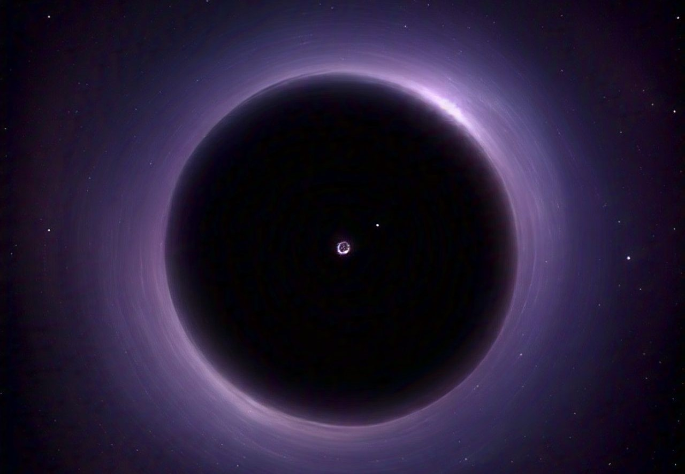
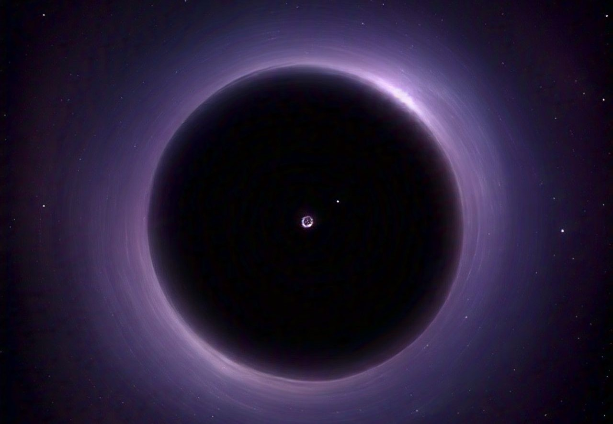

¿Que es el universo?
“El Universo es todo lo que podemos tocar, sentir, percibir, medir o detectar. Abarca las cosas vivas, los planetas, las estrellas, las galaxias, las nubes de polvo, la luz e incluso el tiempo. Antes de que naciera el Universo, no existían el tiempo, el espacio ni la materia.”
Su tamaño exacto es desconocido, pero los científicos creen que se está expandiendo.

"Somos polvo de estrellas reflexionando sobre las estrellas"
TEORIAS DE LA CREACION DEL UNIVERSO
Teoria del Big Bang:
La teoría del Big Bang sostiene que el universo comenzó hace unos 13.8 mil millones de años a partir de un estado extremadamente denso y caliente. Desde entonces, ha estado en expansión continua. La evidencia de esta teoría incluye la expansión de las galaxias, el fondo cósmico de microondas y la distribución de elementos ligeros
Teoría Creacionista (Religiosa):
La teoría creacionista o el creacionismo es la creencia de que la vida y el universo fueron creados por Dios o alguna entidad sobrenatural. Esta perspectiva se basa en textos religiosos y doctrinas, principalmente en los relatos de la creación presentes en el Génesis de la Biblia, para el cristianismo y el judaísmo; así como en otros textos sagrados de diferentes religiones.
Teoría Oscilante
La teoría del universo oscilante propone que el universo pasa por ciclos infinitos de expansión y contracción. Después de un Big Bang, el universo se expande, luego su expansión se detiene y comienza a contraerse hacia un Big Crunch, para luego volver a expandirse en un nuevo ciclo. Este proceso se repite eternamente.
Agujeos negros
Los hoyos negros, o mas conocidos como agujeros negros se forman después de que una Supernova se convierta en nebulosa y esta a su vez tenga en el centro la conocida Estrella de Neutrones; esta no pueden exceder cierta masa sin colapsarse por lo que se establece que todo tiene una ley especifica que determina el porque, como y el limite de un fenómeno por lo que podemos afirmar que ni los electrones, ni los neutrones e incluso los cuarks degenerados pueden impedir el colapso gravitacional de una estrella suficientemente masiva (mayor a ocho masas solares)
 

Polvo de Estrellas
El polvo de estrellas está formado por partículas y elementos creados en el interior de las estrellas. Cuando estas mueren, liberan ese material al espacio en forma de gas y pequeños granos sólidos. Este polvo es esencial para formar nuevas estrellas, planetas e incluso vida, ya que los elementos que componen todo lo que existe, incluido nuestro cuerpo, provienen de estrellas que murieron hace miles de millones de años.